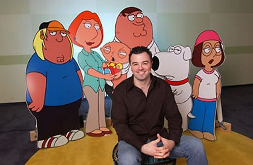
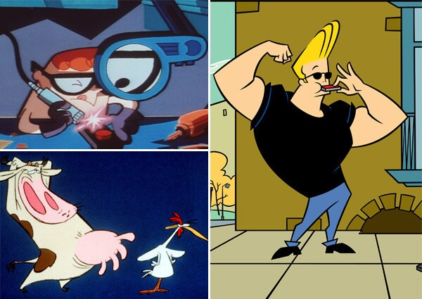
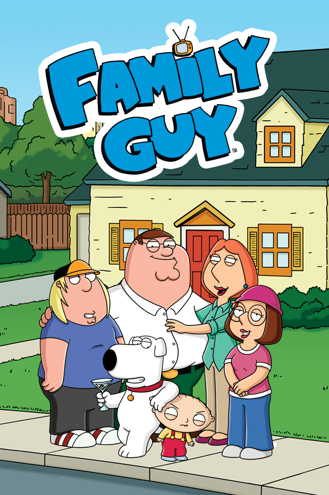
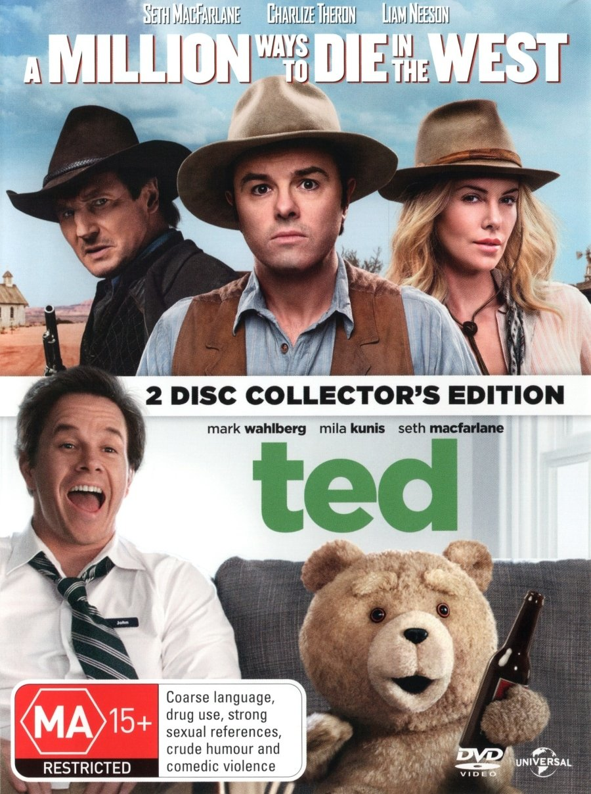
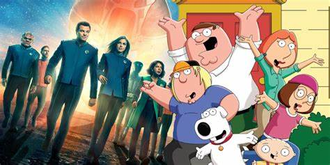

Welcome to Seth MacFarlane's Gallery!

Seth MacFarlane posing with cardboard figures of characters from Family Guy.

The 3 big shows Seth Macfarlane worked on while at Hanna-Barbera. He was one of the writers and animators on Dexters' Laboratory, Cow and Chicken, and Johnny Bravo.

Family Guy was Seth MacFarlane's first major show. The first episode aired on January 31, 1999 and has generated $1 billion in total revenue.
The success of Family Guy helped them launch a spin-off show along side video games, films, books, and live performances.

Ted and A Million ways to Die in the West are two of the major movies Seth MacFarlane helped produce.
Seth MacFarlane performing songs from his fourth album, In Full Swing. In total, Seth MacFarlane has published 6 studio albums.

Seth MacFarlane is currently continuing his work with The Orville and Family Guy.